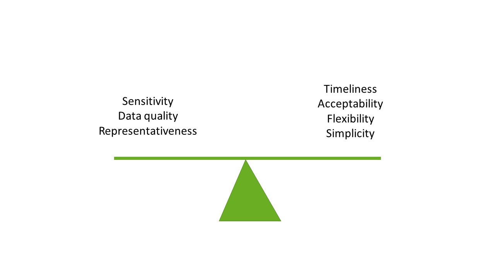

Underestimation
Sensitivity
- Definition: Proportion of cases in a population that are reported. Underascertainment and underreporting
- How to measure: Compare to gold standard, capture-recapture
Positive predictive value
- Definition: proportion of real reported cases, divided by the total number of reported
- How to measure: Case-follow up
Internal completeness
- Definition: the number of completed data fields out of the total number of data fields
- How to measure: Analyse the data
External completeness
- Definition: whether the data reflect the true number of reported cases - ‘sensitivity of reporting’ This corresponds to underreporting
- How to measure: Capture-recapture
Validity
Internal validity
- Definition: extent of errors within the system - ‘errors in reporting’
- How to measure: Analyse the reporting system
External validity
- Definition: whether the information recorded about the cases is correct
- How to measure: Test against a gold standard
Timeliness
- Definition: speed between steps in a public health surveillance system
- How to measure: Analyse database
Usefulness
- Defintion: contribution to the prevention and control of infectious diseases
- How to measure: Survey
Representativeness
- Defintion: _accuracy of describing the occurrence of a health-related event across time, place, person__
- How to measure: Population covered by surveillance divided by the total number
Simplicity
- Definition: refers to both its structure and ease of operation.
- How to measure: Survey
Flexibility
- Definition: the amount of adaptibility to changing information needs
- How to measure: Survey
Acceptability
- Definition: Acceptability is the willingness of persons and organisations to participate
- How to measure: Survey
Balancing attributes

Attributes around underestimation
Representaion of validity. Do you really see the truth behind all our mirros and lenses? Image done by bing image creator
Vocabulary of different time measurements
Representaion of usefulness. What can you do with the information? Image done by bing image creator
{kind=link}
{kind=link}
{kind=link}
{kind=link}
{kind=link}